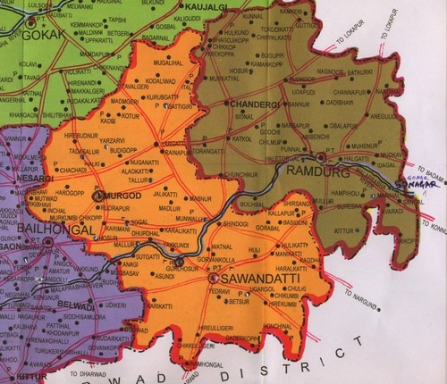

Holy places of Mahaswamiji
aham kraturaham yadnyah swadahamhamounshadham |
mantrohamahamevajyam ahamagniraham hutam ||

There are 7 main holy places regarsing with Sri Chidambar Maha Swamiji.But there are many holy places which are co related with Shri Chidambar Mahaswamiji with one or the other reasons worshiped by the devotees for different reasons since more than 200 years
BAL CHIDAMBAR TEMPLE
It is situated at Muragodh where Sri Chidambar Maha Swamiji took birth .As per the order of the great master of this sentuary Sri Paramachryaji of kanchikmokoti on 25 Jn 1981 Paush Vadya Panchami a statue of
Balchadambar has establish by the Chief of Sandur Sanstan Mr.M.Y.Gorphade .All the pujas are performing reularly at this temple .Every year during the Sravana yhe frestval of Stapana selebration is selebrated .
BADALI
Shri Chidambar Maha Swamiji has 6 children .Sri Divakar Dikshit is second one and most learned .As per order of Sri Chidambar Maha Swamiji Divakar Dikshit setteled at Badli .This village is on bank of Malaprabha river.There was Badri Narayan temple at Badli so it was called Badaryaashram .During the Malaprabha project Dam 1972 this villge came under the back water . Shri Chidambar Maha Swamiji advised Shri Shankar Dixit also to settle at Badli . Shri Chidambar Maha Swamiji use to worship Shiv Panchayatana which they handed over to Shankar Dikshit and also told to Saraswiti Mata to live with Sri Shankar Dikshit .The samadhi of Saraswitimata is there at Kadliwana bihind the house at Badli .Later on the Siva Panchaitan and right folded shanka and japmala of Sri Chidambar Maha Swamiji shifted along with ansistors** at Hubli . Akshay Kalasha is at Madhihal in Dharvad.Which are vailable til date for the Darshana . As Shri Diwakar Dixit worked for freedom movement against british rule there is a warrent on Shri Diwakar Dixit so he was living unknown for some days during shake 1777 .
KARKIHALLI
The elder son of Shri Chidambar Maha Swamiji is Divakar . Once during the shaivagmokta utsav, while serving the food to the divotees told his third brother Mrutujay Dikshit to control on the supply of the Ghee. Mrutujay Dikshit angreed and left the function saying that " I will bring the ghee for the function next year and left angreely.Then he went towords Hydrabad The Nizaam of Hydrabad was heard about him very well so he welcomed him and requested him to live in his state . The nizaam have no kids till that time so he thought that with the blessings of Shri Mrutyunjay Dixit he will become the father of a child . With the blessings of Mrutyunjay Dixit next year when Nizam had got a child he donated a village Karkihalli which is on the banks of the river Tugabhdra . Since then ghee for the Shaivagmokta utsav is suppilied from Karkihalli .
Here during 18th sentuary Chidambar Mrutunjay-eshwar temple is built .During the Tungabhadra dam project in 1952 this area came under back water . Sri Mrutunjay-eshwar is shiftet in to the agricalture land of Sri Babanna Dikshit . At present Sri Suresh Patil a famous desciple of Shri Chidambar Maha Swamiji has continued the worship etc there at with saying .....
Gharo ghari tujha naama ghyave |
Navalksha pataka darshani yaave ||
Muragod te dhanya Kengeri te dhanya|
Navlakshya pataka bhovati mhanave ||
RAJARAM MUT
After the avatara of Shri Chidambar Maha Swamiji ,Sant Rajaram use to live at Gurlhosur only with writing the abhanga. Shri Rajaram use to keep the gatha after writing them on a clean smooth stone at the mutt. Whenever he desire Shri Chidambar Maha Swamiji
use to come over and some times throughout night the discussion continues. the desciples of Shri Chidambar Maha Swamiji there use to hear the talks. The desciples also thought of the darshana of Shri Chidambar Maha Swamiji and requested to Rajarama . Shri Rajaram told them that if you do seva for seven day and nights with out food Shri Chidambar Maha Swamiji will give darshana . The desciples have done accordingly and all of them got darshana on seventh day midnight. They are 14 members who got the darshana on that day. On that day shri Rajaram requeated Shri Chidambar Maha Swamiji to fulfil the desires of needy desciples , devotees who pray at this place , and Shri Chidambar Maha Swamiji agreed upon and since then there are nirguna padukas appeared at the place to and the same were worshipped by Shri Rajaram .
The worship details at the Rajaram Muttv
- Daily kakadarati , pooja ,and bhajana ,arati , shejarati at night.
- Veena jayanti on Akshay tritiya.
- Ashadha vadya chaturdashi Vithabai jayanti.
- At Shravana everyday rudrabhisheka , abhanga parayana , and on last monday of Shravana bilvarchane.
- From kartika vadya pratipada to astami Shri Chidambar Maha Swamiji janmotsava.On the fifth day all the dindis do arrive .
- On sixth the birth day celabration and on the seventh day santa pooja , and on 8th day gopal kala .
- On phalguna vadya dwitiya the jayanti ie birth day celabration of Shri Sant Rajaram.
SIDDANA GAVI (Cave of Sidda).
On the north-east from Kengeri 1.5 km distance (Muragod via Subbapur, Ramapur, Tallurakere road) the Siddana gavi is located. It is the place where the Yamadharma, Garuda came for darshana and lived there. As per Rajaram abhanga one saint called Jayadeva Leela used to live in the cave.
AGADI
It is famous in the name of Anadavana rather than Agadi. One of the most loving desciple of
Shri Chidambar Maha Swamiji known as Shri Sheshachala Guru worshipped Shri Chidambar Maha Swamiji here . There is a veda pathashala of Shukla Yajurveda here. The padukas of Shri Chidambar Maha Swamiji are also here at Shri Desai house.There is a letter written by Shri Chidambar Maha Swamiji him self in the house of Shri Sadanand Hajeeb. Also there is a Shawl given to ramashastri by Shri Chidambar Maha Swamiji in which a stones of gold found also available for darshana at Haveri near by talooka. Is is believed that Shri Chidambar Maha Swamiji also do live in the heart of Shri Sheshachala Sadguru and if anybody worship Shri Sheshachala it is same as to worship Shri Chidambar Maha Swamiji.
The Ramashstri of Agadi to whom Shri Chidambar Maha Swamiji gave a mud-stone in a shawl which became gold latter on , the shawl is still existing with Tammannacharya at Agadi .
KAIVALYASHRAMA MUNAVALLI
At Gurlhosur one of the great devotees of Shri Chidambar Maha Swamiji known as Kaivalya Swami. Who continued the festival of Shri Chidambar Maha Swamiji . He worshipped verymuch and also made to worship the people in the area. W that canvased . When Gurlhosur came under backwater of the Malaprabha dam the Kaivalyashrama is shifted to Munavalli. Along with Shri Chidambar Maha Swamiji festivals the punyotsava of Kaivalya Swami also celebrating there from Aswin navami to dwadashi.